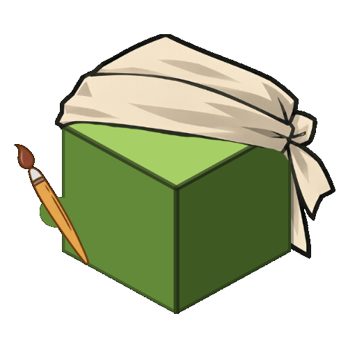
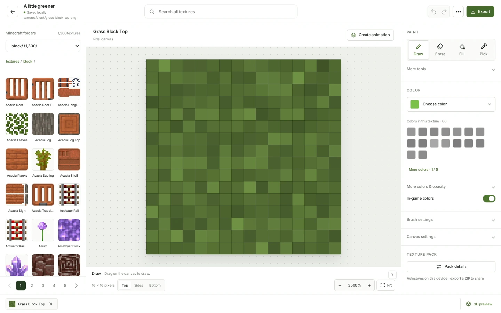
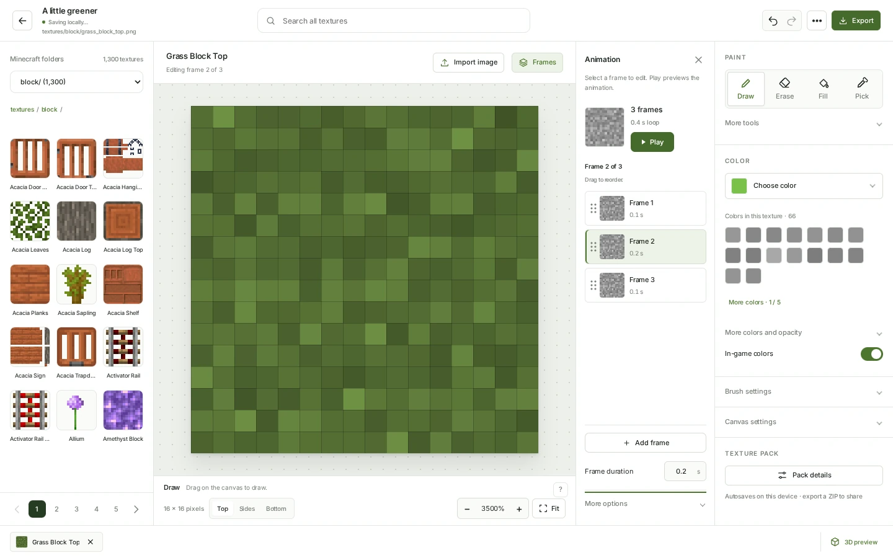
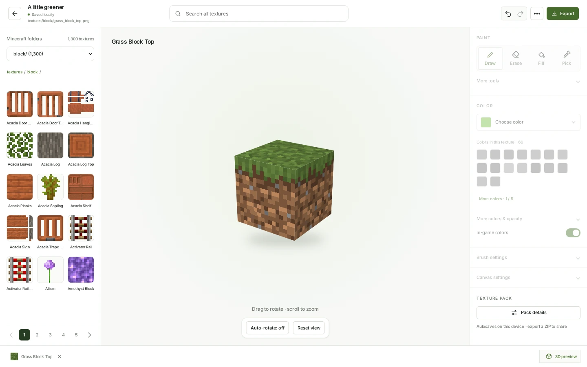

Block and item textures
Paint or import an image, reuse source colors, and check the result in 3D.

cubeon bench. Open BenchMinecraft Java texture editor
Edit Minecraft textures, animate frames, and design skins. Preview your work in 3D and export it from your browser.
Free. No account required.
The editor
Paint with source colors, edit frame timing,
and check changes in the 3D preview.



Draw, erase, fill, and pick colors from the texture.
Open BenchEditing tools
Edit individual textures or a complete resource pack. Import your own images and export files ready for Minecraft Java.
Paint or import an image, reuse source colors, and check the result in 3D.
Copy and reorder frames, set their duration, and preview playback before exporting.
Edit 64 × 64 skins with a layout guide and a 3D character preview.
Storage and offline access
Projects save in this browser. Install Bench for offline editing, and export workspace backups to keep a portable copy.
Help
Yes. Open the editor and start creating. You don’t need an account.
Yes. Import a Minecraft Java resource-pack ZIP, edit its textures, and export a new ZIP. Bench keeps the other files in your imported pack.
After opening Bench online and preparing offline support in Settings, you can work without a connection. You can also install it as an app from a supported browser.
In this browser on this device. Export a workspace backup to move your work or keep a copy. Clearing your browser’s site data removes local projects, so keep a backup.
Export your pack as a ZIP for Minecraft Java Edition, or download your skin as a PNG. You can also export individual textures.